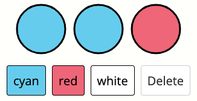
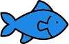
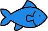

In this experiment, you will play the role of a wildlife researcher who is studying fish populations in different ponds. You will visit four ponds that each have 10 fish in them. There are different types of fish in each pond. Your goal is to learn about how many of each type of fish live in the ponds.
At each pond, you will complete the following phases:
You will earn a bonus that depends on the accuracy of your predictions and the predictions made by the participant who receives your message.
When you a first arrive at a pond, you will read a message from a previous participant. That participant caught fish in the same pond and released them back to learn about the distribution of fish types.
The previous participant composed a message using symbols that were the same colors as the fish in the pond. For example, if the pond had cyan, red, and white fish in it, the previous participant's interface might look like this:
After reading a message, you will report your beliefs. You will be asked to predict the most likely number of fish of each type in the pond, along with how much information you have for that belief. The prediction interface looks like this:

You will earn an individual bonus based on how close your prediction is to the true distribution of fish. Setting the information value higher will increase your bonus if your prediction is close to the true distribution, but decrease it if your prediction is far from the true distribution.
You can think of the amount of information as the total number of catches that inform your decision. For example, if you've seen four fish and have no other information, entering an information value of 4 will maximize your expected bonus.
You can think of the confidence value as the total number of catches that are informing your decision, both those that you have observed and those you were told about. For example, if you've seen two fish and have no other information, setting the confidence value to 2 will maximize your expected bonus.
Next, you will go fishing. You will catch some fish and observe their colors. After catching a fish, you release it back into the pond. In this phase, you should click the fishing rod to go fishing. You will then see which type of fish you caught.

 

You will not be able to see which type of fish you caught after you release them, so make sure you remember which fish you caught.
After catching some fish, you will need to leave the pond. Before you leave, you will have the opportunity to write a message for a future participant.
You will compose a message using an interface that lets you send symbols of the same colors as the fish in that pond. You will only be able to send a limited number of symbols, which might vary from pond to pond. Here is an example of the interface you use to create a message:
Your bonus will depend on the performance of the participants who read your messages, so make sure to write helpful messages!
Finally, you will report your beliefs about the fish in the pond again, using the same interface. Your individual bonus also depends on how well you predict the true distribution of fish in this stage.